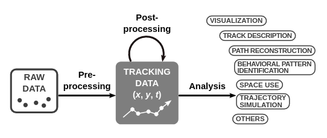
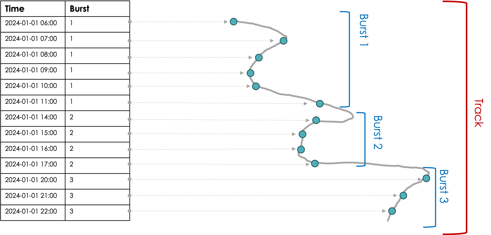
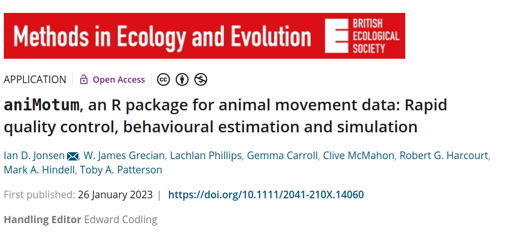

![]()
here::here()[1] "/Users/jsigner/git/movement_ecology_1"Analysis of Animal Movement Data with R (together with Brian Smith)
February 12, 2026
Throughout the whole course and also for the exercises, if possible, please use your own data.
Lectures will be held via zoom.
During the whole workshop we have a slack channel where you ask questions (we will monitor the channel during the course, feel free to ask questions there also outside the course hours).
All course material are available here: https://github.com/jmsigner/movement_ecology_1
We will mainly use the amt package, but also occasionally other packages for movement analysis.
See also required_packages.R for a list of all packages that we need and to get the latest version of all packages.
%>% or |>: Pipes the output of one function to a next function. We will discuss this further later on.:: to access a name space form a package.data.frame or tibble?
Figure from Joo et al 2020
For more see Joo et al. 2020.
Movement data is inherently spatial.
Thus we will have to deal with tools to work with spatial data (R has a rich set of tools to deal with spatial data; e.g. https://geocompr.robinlovelace.net/).
We will work frequently with raster data (spatial covariates) and possibly with vector data (i.e., home ranges).
One of the challenges is to ensure that both – tracking data and covariates – have a matching coordinate reference system (CRS).
In addition to movement data, we often want to annotate them with environmental data ofte as:
amt supports raster layers from the terra package. ‚

We use the amt package, but for many other packages it is the same workflow of:
read.csv() or alike)Multiple individuals
Note, at this point multiple individuals can be mixed and sampling rates can be heterogeneous.
X x_ y_ t_ burst_
1 1 4314068 3445807 2008-03-30 00:01:47 1
2 2 4314053 3445768 2008-03-30 06:00:54 1# A tibble: 2 × 3
x_ y_ t_
* <dbl> <dbl> <dttm>
1 4314068. 3445807. 2008-03-30 00:01:47
2 4314053. 3445768. 2008-03-30 06:00:54[1] "track_xyt" "track_xy" "tbl_df" "tbl" "data.frame"
summarize_sampling_rate() takes a track as input and gives a summary of the sampling rate.summarize_sampling_rate_many(), which will do the same thing, but for many animals.track_resample() can be used to take a relocation every predefined time interval (e.g., 30 minutes, 2 hours, …) within a tolerance.track_resample() is again a track with one additional column called burst_.If you have gaps and/or different sampling rates, interpolation with continuous time movement models may be an option.
